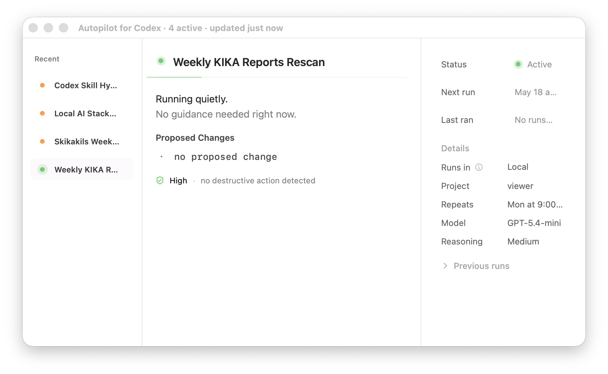

Local automation status
Reads local Codex automation files and shows what is active, waiting, paused, or blocked.
A calm native control surface for local Codex automation status, approvals, proposed changes, and workflow visibility.

Reads local Codex automation files and shows what is active, waiting, paused, or blocked.
Surfaces proposed changes, permissions, and safety state before work continues.
Swift, SwiftUI, AppKit, menu bar controls, notifications, keyboard shortcuts, and notarized distribution.